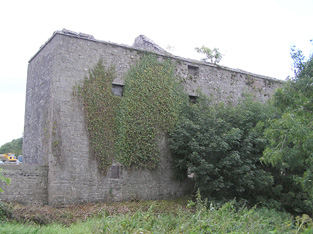
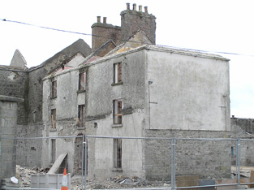
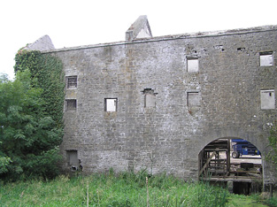

Nice little video on the Richmond Mills/ Distillery at Cloondara Co.Longford.
https://youtu.be/AJS-SYJvwpE
Originally a corn mill and then converted to a distillery in 1827 .In operation up to 1843 when it reverted to a corn mill.We can probably blame Fr. Matthew for its closure. In it's heyday it produced between 70,000 to 80,000 galls of whiskey per year. It ceased as a mill in the mid 1950's and found a variety of uses until falling derelict . it has now found a new use as the central building of a housing development.
Photos from National Inventory of Architectural Heritage...
http://www.buildingsofireland.ie/niah/s ... o=13307011
NOTE: This forum is no longer active. This is an archive copy of the forum as it was on 10 March 2018.
Richmond Distillery / Mills Cloondara Longford
1 post
• Page 1 of 1
Richmond Distillery / Mills Cloondara Longford
 by charleymcguffin » Wed Feb 10, 2016 9:48 pm
by charleymcguffin » Wed Feb 10, 2016 9:48 pm
- Attachments
-
- 
- 13307011_11.jpg (55.73 KiB) Viewed 41 times
-
- 
- 13307010_1.jpg (50.31 KiB) Viewed 41 times
-
- 
- 13307011_1.jpg (59.22 KiB) Viewed 41 times
- charleymcguffin
- Rundlet Cask
- Posts: 125
- Joined: Fri Mar 21, 2014 10:08 pm
1 post
• Page 1 of 1
Return to Distillery Info & Pictures